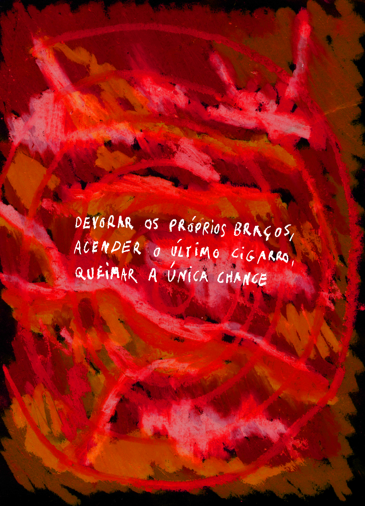
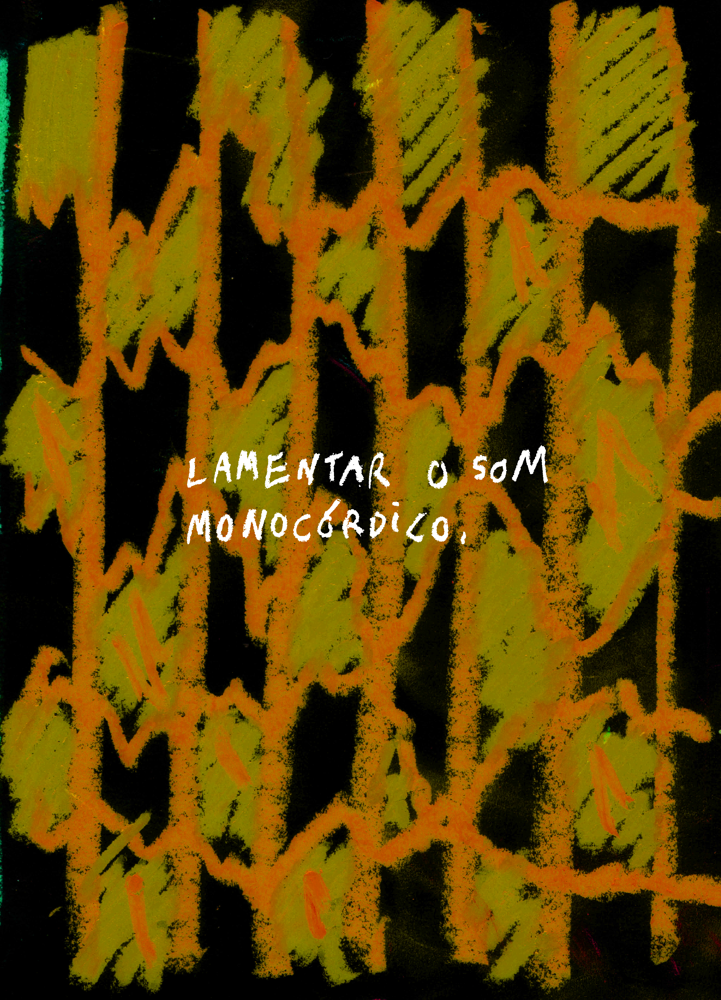
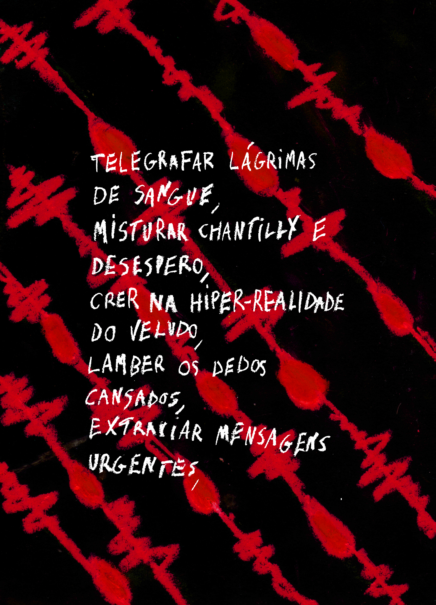
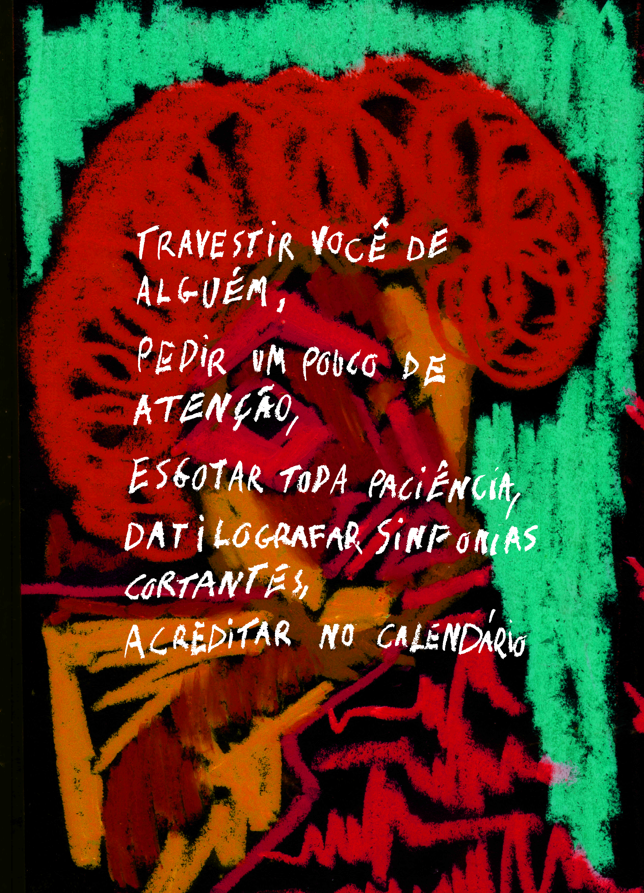
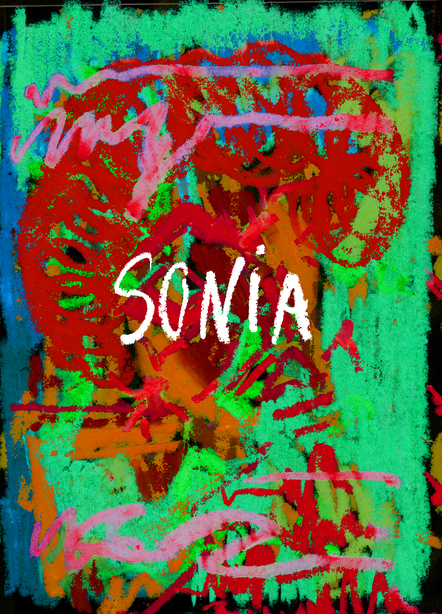

☆☆☆membrana_lab.html☆☆☆
uma condensação de experimentações gráficas e sonoras.

☆☆☆☆☆☆☆☆☆☆☆☆☆☆☆☆☆☆☆☆☆☆☆☆☆☆☆☆☆☆☆☆☆☆☆☆☆☆☆☆☆☆☆☆☆☆☆☆☆☆☆☆☆☆☆☆☆☆☆☆☆☆☆☆☆☆☆☆☆☆☆☆☆☆☆☆☆☆☆☆☆☆☆☆
☆☆☆☆☆☆☆☆☆☆☆☆☆☆☆☆☆☆☆☆☆☆☆☆☆☆☆☆☆☆☆☆☆☆☆☆☆☆☆☆☆☆☆☆☆☆☆☆☆☆☆☆☆☆☆☆☆☆☆☆☆☆☆☆☆☆☆☆☆☆☆☆☆☆☆☆☆☆☆☆☆☆☆☆
☆☆☆☆☆☆☆☆☆☆☆☆☆☆☆☆☆☆☆☆☆☆☆☆☆☆☆☆☆☆☆☆☆☆☆☆☆☆☆☆☆☆☆☆☆☆☆☆☆☆☆☆☆☆☆☆☆☆☆☆☆☆☆☆☆☆☆☆☆☆☆☆☆☆☆☆☆☆
☆☆☆☆☆☆☆☆☆☆☆☆☆☆☆☆☆☆☆☆☆☆☆☆☆☆☆☆☆☆☆☆☆☆☆☆☆☆☆☆☆☆☆☆☆☆☆☆☆☆☆☆☆☆☆☆☆☆☆☆☆☆☆☆☆☆☆☆☆☆☆☆☆☆☆☆☆☆
☆☆☆☆☆☆☆☆☆☆☆☆☆☆☆☆☆☆☆☆☆☆☆☆☆☆☆☆☆☆☆☆☆☆☆☆☆☆☆☆☆☆☆☆☆☆☆☆☆☆☆☆☆☆☆☆☆☆☆☆☆☆☆☆☆☆☆☆☆☆☆☆☆☆☆☆☆☆
texto em construção
autor=+>>>>>SAMUEL
sonia surge em uma das muitas madrugadas em que liana padilha e lucas lauri encarnam a trilha sonora das minhas loucuras. as idas e vindas entre imagem e som constituem o cerne do meu processo artístico e é possível notar o resultado dessa "tradução simultânea" nesse conjunto de pinturas em giz pastel.
os formatos e cores de cada uma das telas emergem de um fluxo de consciência atingido durante a audição de sonia, faixa lançada por noporn em 2005 e título da coleção.
trechos da música foram transcritos separadamente a adicionados às suas respectivas pinturas durante a pós-produção.






enumerar novidades falar de sentimentos teletransportar momentos fotográficos descobrir razões existencialistas traçar planos de futuro lembrar noites alucinadas de verão vestir máscara robotizada chorar solidão radioativa gritar por lírios brancos cuspir palavras medrosas encarnar personagem nouvelle vague transmitir recados telegráficos sentir cheiros agradáveis enterrar páginas de diário ressussitar fantasmas pós-modernos rasgar cortinas transparentes matar insetos de paixão afogar peixes tristes furar olhos indiscretos enxugar lábios verborrágicos suar borboletas azuis perder o controle das emoções encontrar livros antigos perdidos revisitar florestas escuras parecer criança mimada comer chocolates amargos montar quebra-cabeça milenar traduzir contos egípcios digitar flashes íntimos devorar os próprios braços acender o último cigarro queimar a única chance evitar o encontro por acaso fugir antes que seja tarde dizer a pura verdade simular a eternidade das relações desprogramar o último ato eternizar a efemeridade das conveniências telegrafar lágrimas de sangue misturar chantily e desespero crer na hiperrealidade do veludo lamber os dedos cansados extraviar mensagens urgentes travestir você de alguém pedir um pouco de atenção esgotar toda paciência datilografar sinfonias cortantes acreditar no calendário detectar crueldades passivas delimitar a altura do muro ensaiar frases de efeito lamentar o som monocórdio reduzir o sentimento de culpa enxergar além do desejo determinar o sim e o não explodir de curiosidade roer todos os complexos exigir ação e reação decodificar segredos latentes entender que precisamos de fatos